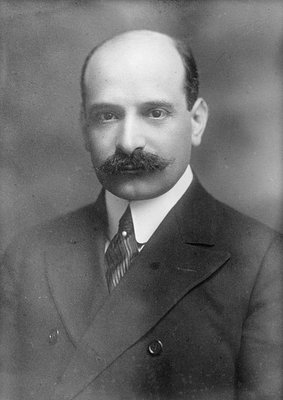
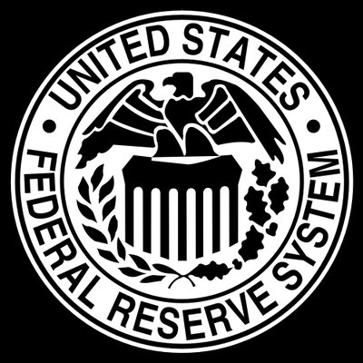
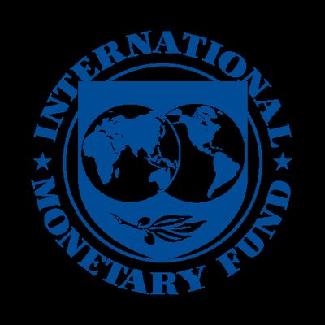
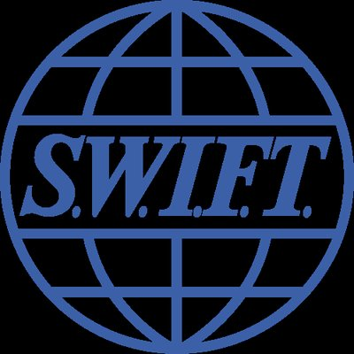

The Architecture
Before a single bomb is dropped, the financial system decides who lives and who dies.
This is not a metaphor. It is an architecture — built over a century, refined through two world wars, and enforced today through a mechanism so effective that most people don’t know it exists.
To understand why Iran is being bombed right now — to understand why Iraq was invaded, why Libya was destroyed, why Venezuela is starving, why Cuba has been under siege for sixty years — you have to understand where the money goes.
Start at the beginning.
Jekyll Island
In November 1910, six men boarded a private railcar in Hoboken, New Jersey. They used first names only to avoid identification. Their destination: Jekyll Island, a private resort off the coast of Georgia owned by J.P. Morgan and associates.
The six men represented approximately one-quarter of the world’s wealth. They spent nine days drafting the blueprint for what would become the Federal Reserve System.


A year before the meeting, the Pujo Committee investigation found that Morgan and Rockefeller-allied interests controlled the boards of 112 corporations worth $22.2 billion — a staggering concentration of financial power. The Federal Reserve was sold to the public as the solution to this very problem.
The men who created the problem wrote the solution. And the solution gave them permanent control of the money supply.
The Federal Reserve
The Federal Reserve Act passed on December 23, 1913 — two days before Christmas, with many members of Congress already home for the holiday. It created a system of twelve regional banks with private ownership that would control the nation’s monetary policy, interest rates, and money supply.
The Fed is not federal. It has no reserves. It is a private banking cartel with a government charter.

The Central Bank of Central Banks
In 1930, the Bank for International Settlements was established in Basel, Switzerland. Officially, it exists to coordinate monetary policy among central banks. In practice, it operates above national sovereignty.
The BIS has diplomatic immunity. Its assets cannot be seized. It is not subject to the jurisdiction of any nation. Sixty-three central banks are members. If your country’s central bank is a BIS member, your monetary policy is coordinated through Basel.
Bretton Woods
In July 1944, 730 delegates from 44 Allied nations gathered at the Mount Washington Hotel in Bretton Woods, New Hampshire. They designed the post-war global financial order.
Two institutions were created: the International Monetary Fund and the World Bank. The US dollar was established as the world’s reserve currency, pegged to gold at $35 per ounce. Every other currency was pegged to the dollar.
The country that won the war got to write the rules of money.
The IMF was designed as the enforcer. When a country runs into financial trouble, the IMF offers loans — with conditions. These “structural adjustment programs” typically require: privatization of state assets, austerity measures, trade liberalization, and deregulation. Critics call it economic colonialism with a briefcase instead of a gun.
The IMF’s voting power is weighted by financial contribution. The United States holds approximately 16.5% of votes. Major decisions require an 85% threshold. This gives the US permanent veto power over the institution that sets the financial rules for the developing world.

The Petrodollar
In 1971, President Nixon closed the gold window — ending the dollar’s convertibility to gold. The Bretton Woods system collapsed overnight. The dollar was now backed by nothing.
It needed a new anchor. It found one in oil.
In 1973, Secretary of State Henry Kissinger brokered a deal with Saudi Arabia: the Saudis would price all oil sales exclusively in US dollars and recycle their petrodollars into US Treasury bonds. In exchange, the United States would guarantee the security of the Saudi regime.

Every country that wanted to buy oil now needed dollars first. Global demand for dollars was guaranteed — not by gold, not by economic output, but by the world’s dependence on energy.
SWIFT
In 1977, the SWIFT network went live — the Society for Worldwide Interbank Financial Telecommunication. A Belgian cooperative that provides the messaging layer for virtually all cross-border banking.
Over 11,000 financial institutions across 200+ countries. Approximately 45 million messages per day. SWIFT does not move money — it sends the instructions that tell banks to move money. But because almost every international transaction runs through it, being cut off from SWIFT is functionally identical to being cut off from the global economy.

The US dollar is used on one side of 88% of all forex transactions. Approximately 58% of global foreign exchange reserves are held in dollars. Every dollar-denominated transaction on Earth must clear through a US correspondent bank — giving the US Treasury legal jurisdiction over financial activity worldwide.
The Kill Switch
The Office of Foreign Assets Control — OFAC — housed within the US Treasury, maintains a list of individuals, entities, and entire nations that are blocked from the US financial system. The number of active sanctions designations has grown from approximately 900 in the year 2000 to over 9,400 today.
A tenfold increase in twenty years.
Secondary sanctions extend this further: any non-US bank that does business with a sanctioned entity can itself be cut off from the dollar. This forces every bank on Earth to enforce American foreign policy — regardless of what their own government thinks.
The EU has officially condemned secondary sanctions as violations of sovereignty. But no European bank has ever defied them. The cost of losing dollar access is existential.
Secret meeting → Private central bank → Supranational coordination → Dollar as world reserve → Oil as dollar anchor → Global financial kill switch.
This is the architecture. It was not built to serve nations. It was built to control them.